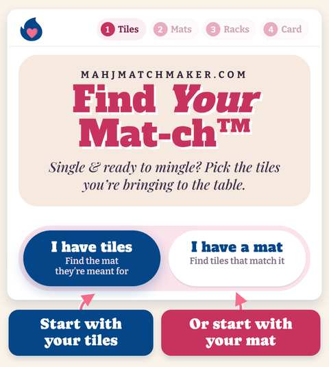
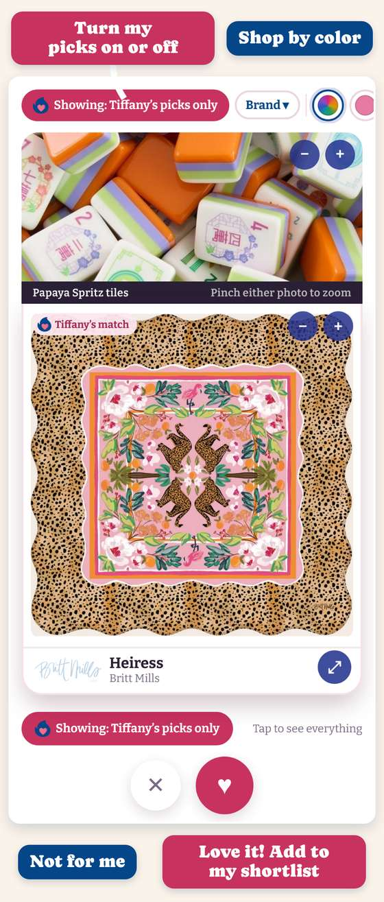
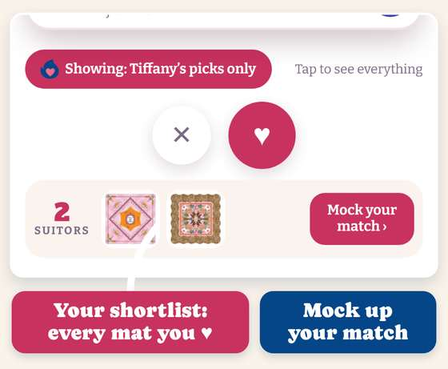
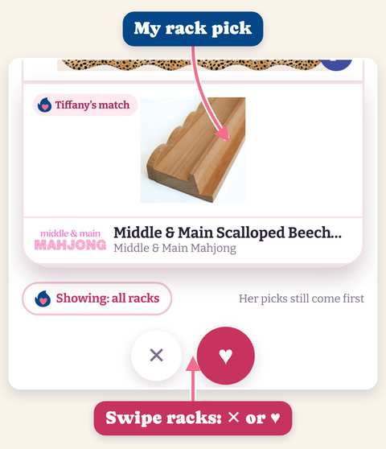
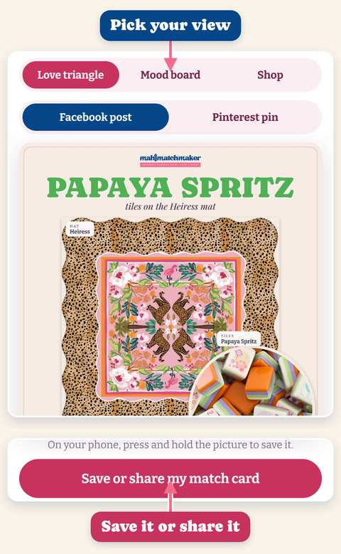

This is a new tool I’m rolling out just for you: Find Your Mat‑ch™. This time I’m stepping out of the matchmaker seat, and it’s your turn to find your match.
My picks are baked right in, so you’re never swiping alone.
Start with the tiles you own, or start with the mat you already love.

Tap ♥ to add a mat to your shortlist and ✕ to skip it. My picks show first; tap the pink button to see every mat. Tap a color dot to shop by color, and tap it again to clear it.

Every mat you ♥ collects at the bottom, so you can compare. When you’re ready, tap Mock your match.

See your tiles, mat and racks together. Swipe racks the same way, then tap Make it official.

Pick your view, then save your match card or send it to your mahj group. Every piece is linked, with code MAHJMATCH.

Hope you love it!
Something look off or have an idea? Tell me here →
Use code MAHJMATCH to save 💕
Happy mat-ching!
xo, Tiffany
Hooking up tiles, mats & racks
[Mailing address: pending from Tiffany] · Unsubscribe (Squarespace adds both to every send)